Magnetic-field enhanced solar-to-hydrogen conversion using spin-selective perovskite photoelectrodes.
Halide & chalcogenide perovskites for stable, efficient light-emitting and photovoltaic devices.
Advanced spectroscopic techniques for in operando characterizations.
Lithium-ion cell diagnostics, Electrolyte engineering, and Battery forensics.
LSTM, autoencoders, and gradient-boosted models for property prediction and degradation diagnostics.
My doctoral research investigates how external magnetic fields and spin-polarised charge carriers can dramatically boost solar-to-hydrogen conversion efficiency in Cs2RuX6 photoelectrodes. Using Cs2RuX6 photoanodes decorated with magnetic CoFeOₓ overlayers, we established a direct link between surface magnetic moment orientation and minority-carrier extraction kinetics.
The work opens a new design parameter — spin engineering — for next-generation PEC devices, complementing conventional band-engineering and co-catalyst strategies.
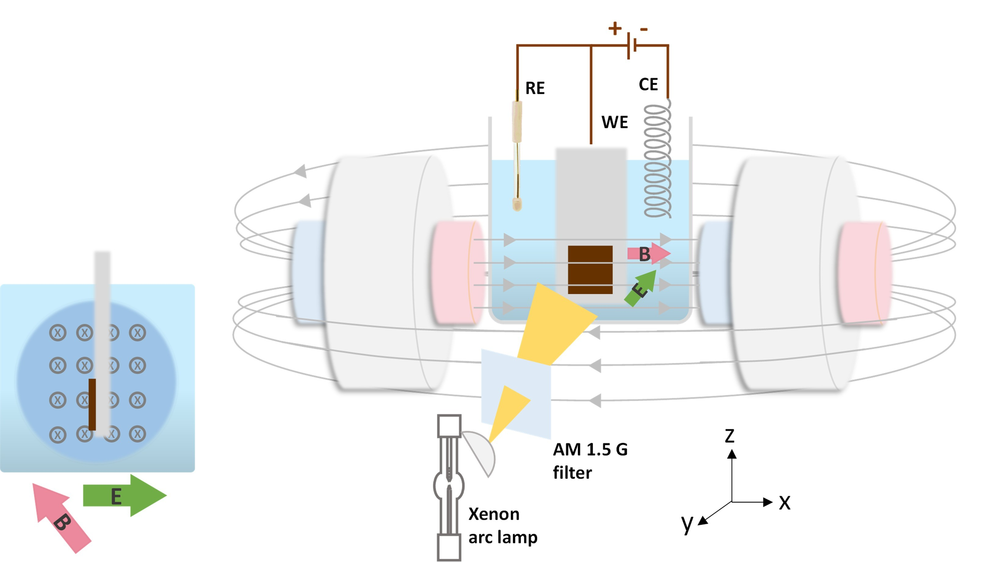
PEC cell setup with BiVO₄ photoanode under AM 1.5G illumination
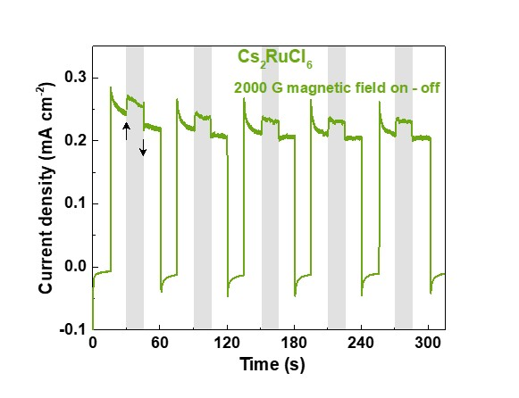
J-V characteristics
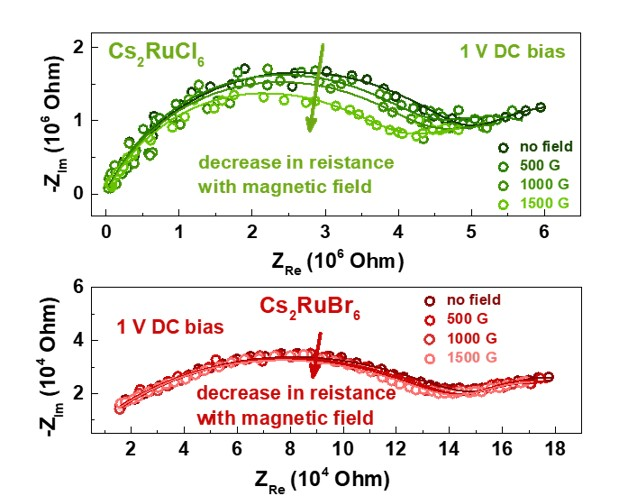
EIS / Mott-Schottky
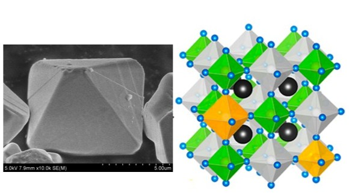
Chalcogenide perovskite BaZrS₃ crystal and optical emission
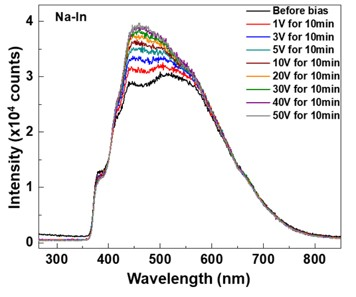
PL emission spectra
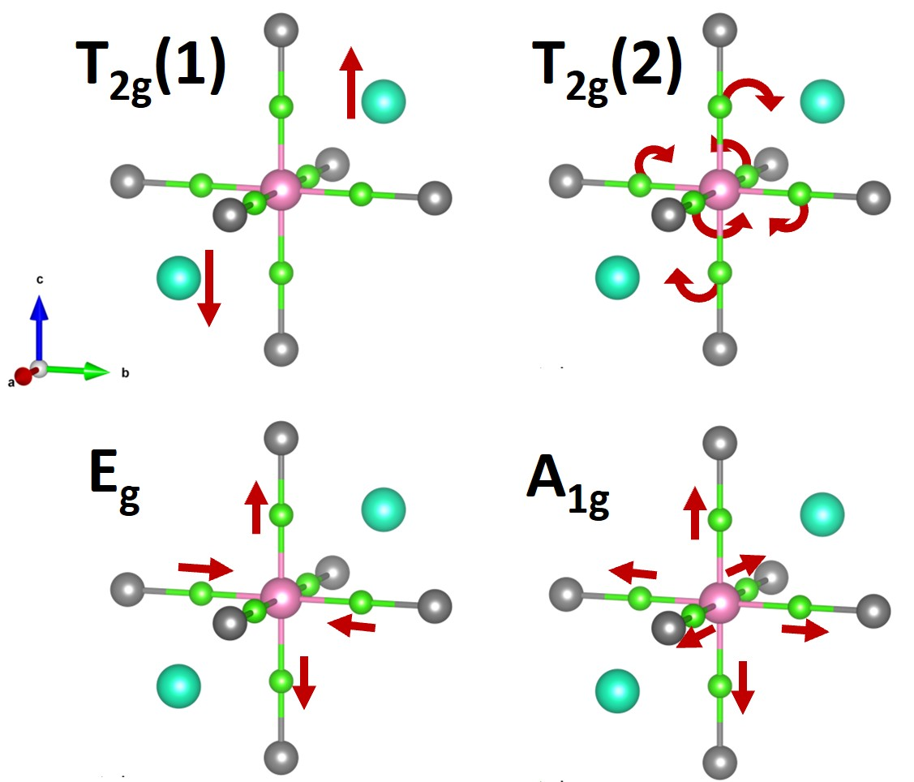
XRD / Bond vibrational analysis
I explore both halide and chalcogenide perovskites as lead-free, stable alternatives for light-emitting and photovoltaic applications. My work on BaZrS₃ revealed how octahedral distortions quench photoluminescence — a key mechanistic insight for LED material design — and demonstrated bipolaron-mediated hopping as the dominant conduction pathway at room temperature.
Parallel efforts on halide perovskite LEDs focus on defect passivation, quantum-confinement tuning, and encapsulation strategies to push EQE beyond 20% in the green spectral window.
As a PhD scholar, I developed a patented setup to study optoelectronic devices under in operando conditions. The unique setup helps to understand the charge transfer mechanisms at the interfaces of the device, which is crucial for the development of efficient optoelectronic devices.
The measurements can be performed across a range of low to high temperature, magnetic field, and light intensity on photovoltaic and photoelectrochemical devices.
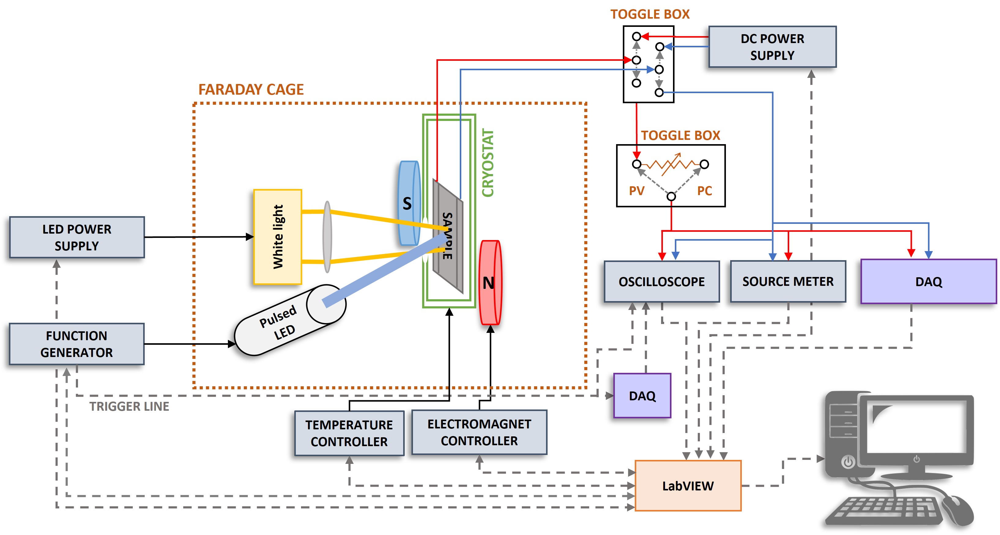
Transient photovoltage and photocurrent measurements
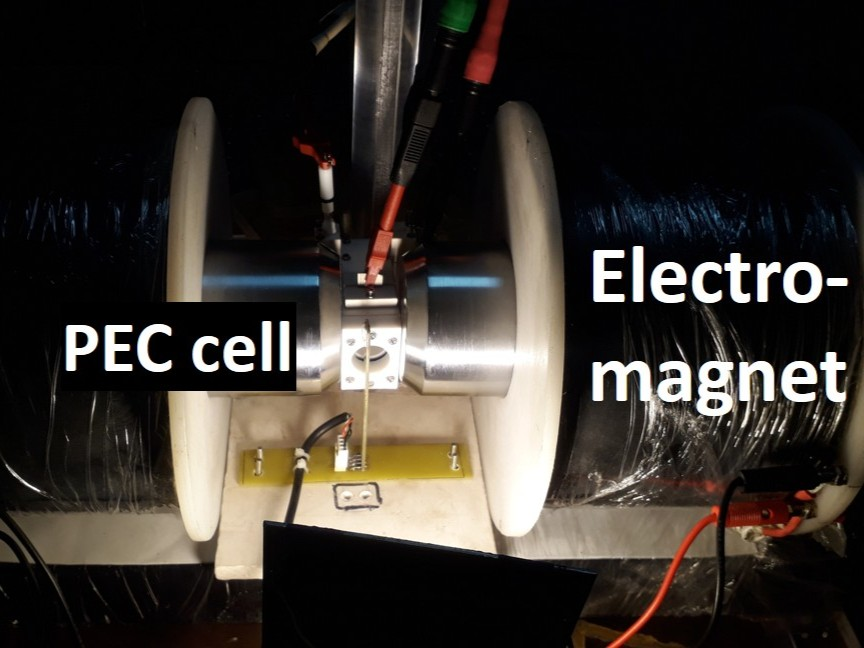
Magnetic PEC setup
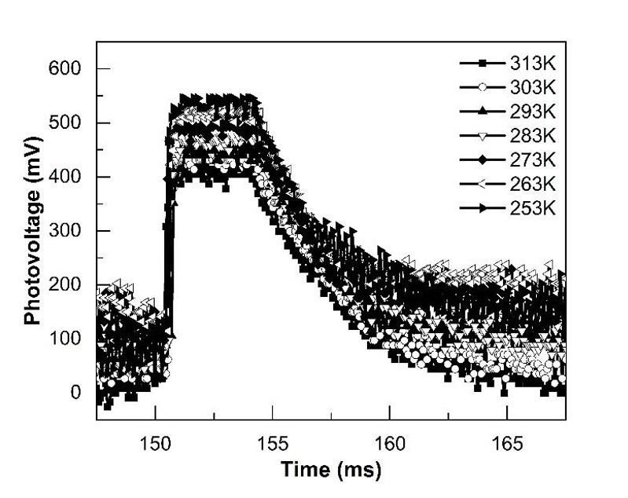
Temperature dependent transient photovoltage
As Battery R&D Manager at OLA Electric, I led a team focused on lithium-ion cell diagnostics, electrode material optimisation, and full-cell validation protocols for high-rate EV applications. Work spanned from coin-cell fabrication and electrochemical characterisation all the way to pack-level thermal management and cycle-life benchmarking.
A strong emphasis was placed on understanding capacity fade mechanisms through EIS, post-mortem analysis, and correlating micro-structural changes to macroscopic performance metrics.
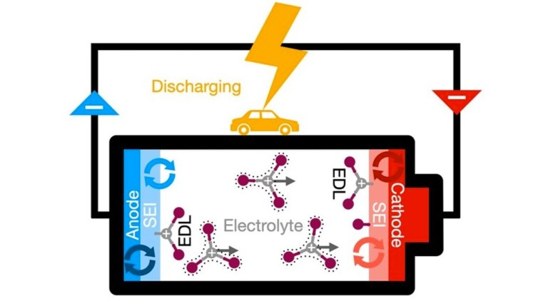
Electrochemical cycler and coin-cell assembly for LIB testing
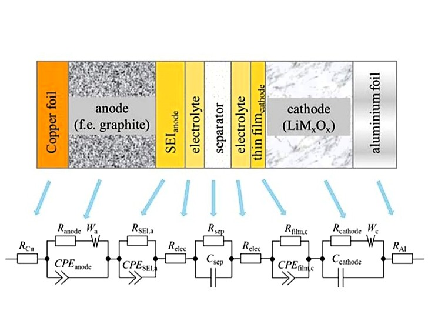
EIS characterisation
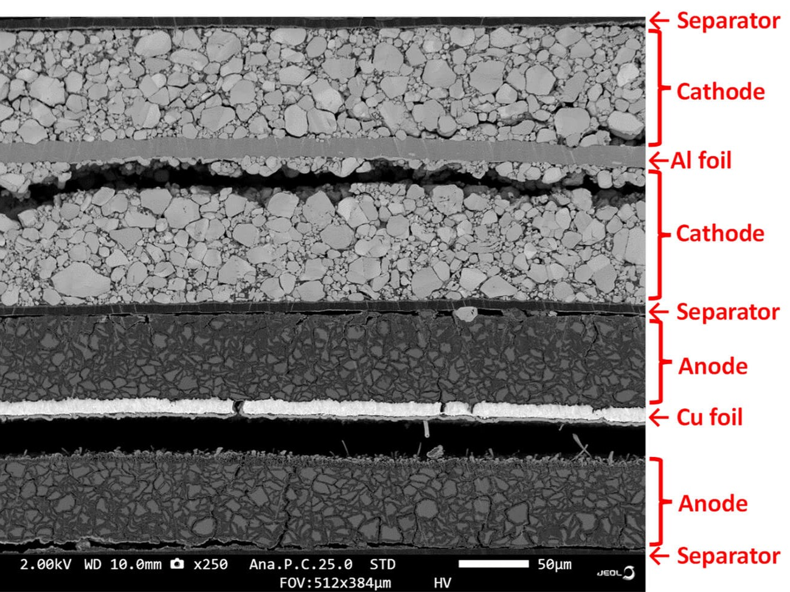
Post-mortem SEM analysis
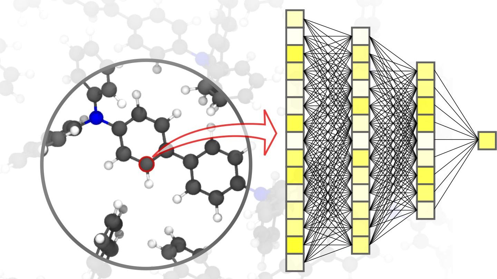
LSTM-predicted vs measured SoC across dynamic drive cycles
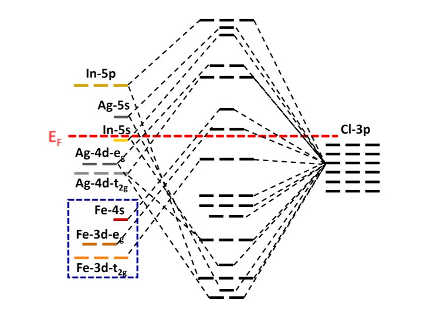
DFT vs ML bandgap prediction
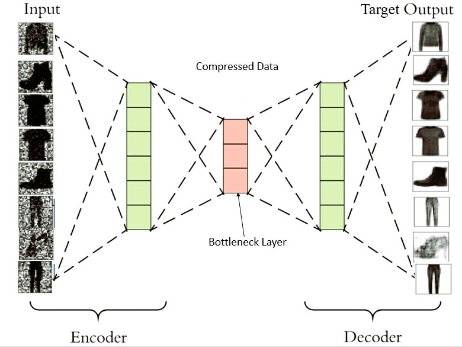
Autoencoder degradation detection
I apply data-driven methods across two fronts: accelerating materials discovery for energy applications, and enabling smarter battery management. LSTM networks trained on dynamic drive-cycle data predict SoC with <2% RMSE in real time, while gradient-boosted models reduce DFT screening time for new perovskites by an order of magnitude.
Autoencoder-based anomaly detection on EIS signatures provides early-warning degradation diagnostics without relying on physics-based equivalent-circuit fitting.
Where the next chapter of this work is headed
Coupling spin-polarised photoanodes with low-bandgap chalcogenide photocathodes to push unassisted solar-to-hydrogen efficiency beyond 10%.
Engineering mixed-halide perovskites with suppressed phase segregation for long-lifetime blue LEDs targeting >10,000 hours operational stability.
Understanding lithium dendrite nucleation at garnet electrolyte/Li-metal interfaces using cryo-TEM and in-situ electrochemical operando techniques.
Building crystal-graph neural networks trained on DFT datasets to predict stability, ionic conductivity, and optoelectronic properties of novel perovskite compositions.
Reinforcement learning-optimised charging protocols that maximise cycle life while minimising lithium plating risk — validated on physical cell hardware.
Combining in-situ Raman, XAS, and electrochemical measurements to track real-time structural evolution of photoelectrodes under working PEC conditions.